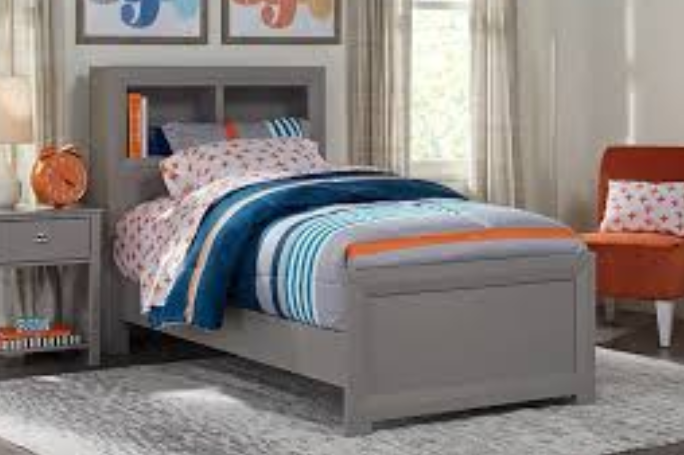
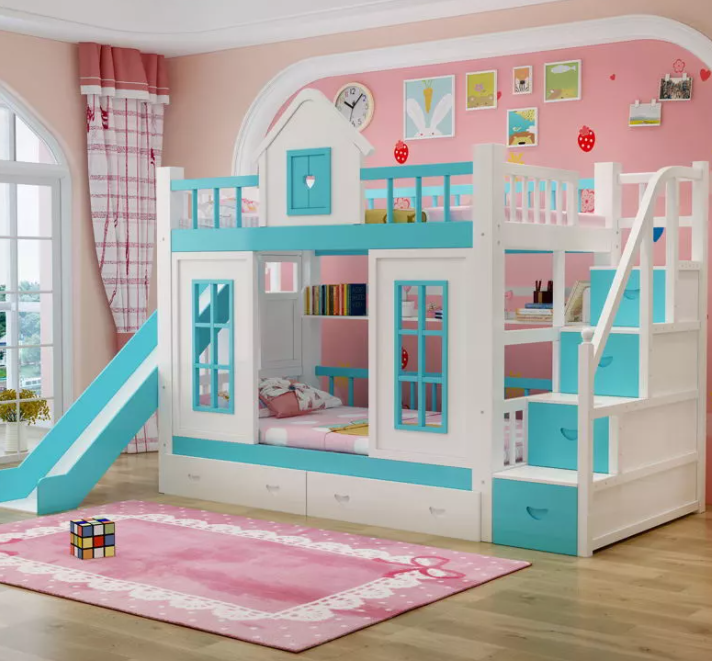

Children Bedroom Furniture - A Guide
Buying children bedroom furniture for that matter some furniture for kids' rooms requires some preparation and consideration of different elements. To start with measure your child's room correctly since selecting the ideal size and kind is critical to make a healthful and secure atmosphere for the children to spend their time . It can help to think about the kid's fad since it will mean a great deal to her or him. اسعار غرف نوم اطفال Durability factor is essential because decades of tear and wear as a result of child's playing on the sofas and beds lead to appreciable harm. Thus taking extreme attention of the substances utilized to make the furniture is equally vital.

Most important aspect to take into account while buying children bedroom furniture would be security, because children tend toward receive injured because of their playfulness. Sharp corners and edges must be avoided. The cloth ought to be removable, washable or perhaps coated readily. Make sure the aesthetics and colour schemes and even psychologists highlight the impact of colours on the moods . Employing vibrant bright colours may have a beneficial impact on the youngsters.
While creating children bedroom furniture it's very important to make an environment having sufficient room to enable the children freedom to perform with, crawl, and combat, sleep, read, write and research. The ambience needs to inspire and encourage your children to imagine, believe and feel protected also. These facets help in projecting the child's character in a large way. The furniture has to be drawn up in a fashion that will help to make children contented and comfy in addition to care for the well-being.
Singling out a multifunctional kind for children bedroom furniture makes a great deal of excellent sense. غرف نوم اطفال كلاسيك 2020 Among different functions, a lot of storage area is a vital priority. Replace storage containers and cabinets with bookcases contained inside allows enough room for neatly storing novels, other research materials, bed linen and clothing. Particular designs are sexy favorites of children nowadays. This ought to be taken into account whilst purchasing for children' furniture. For people who began with only bunk beds it'll be helpful to place in fitting furniture such as dividers including toys, clothe racks and cabinets.

Children bedroom furniture ought to have the ease of getting everything close at hand. Their toys, clothing or other sundry things have to be available least efforts. The age variable has to be considered while creating kids' furniture. While designing the children bedroom furniture care has to be taken to be aware that the fundamentals, interests and potential for their children to make appropriate furniture which will assist the children to develop those traits.